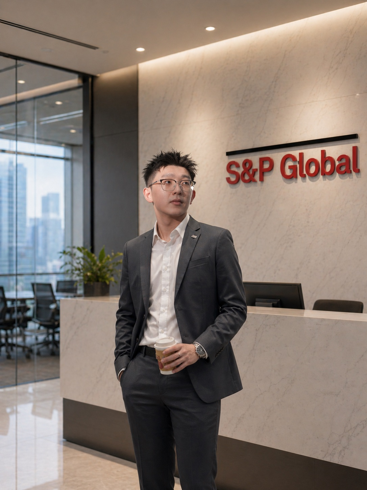

I’m a finance professional with experience in private equity data management, institutional investment operations, and investment analysis. At S&P Global, I managed APAC Limited Partner investment data for leading institutional portfolios. I also developed this website from scratch using vibe coding, and my near-term goal is to integrate AI and automation into investment workflows — so teams can spend less time on routine back-office work and focus more on value creation and decision-quality.

Finance training, research work, simulation experience, and academic outcomes.
View Education →I am a finance professional specialising in private equity, institutional investment data management, and investment analytics. My experience spans supporting global institutional investors across Asia-Pacific, including retirement funds, asset management firms, insurance companies, trust banks, and development banks.
At S&P Global, I managed investment data for one of the firm's largest institutional portfolios, representing more than US$550 billion in Assets Under Management (AUM) across over 1,000 private market funds.
Beyond finance, I enjoy leveraging technology to solve business problems